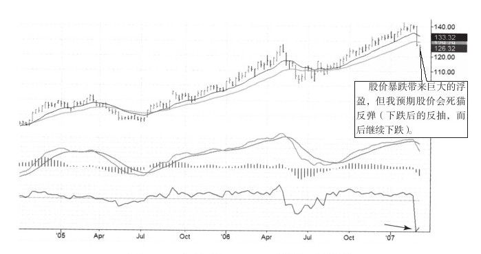
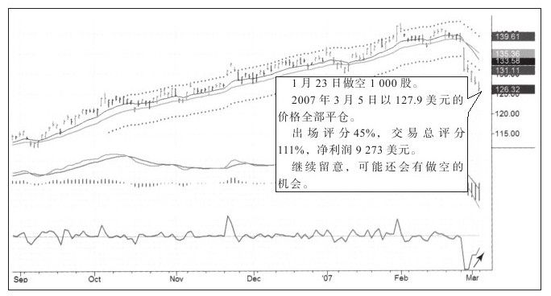
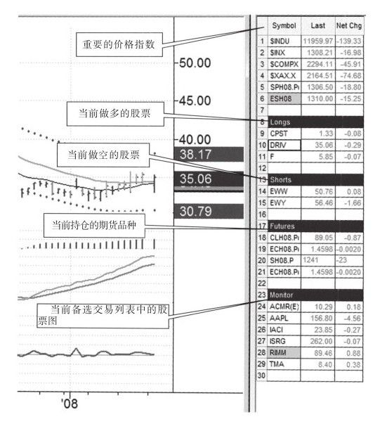
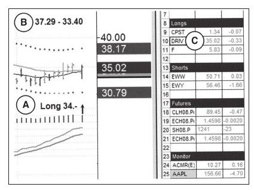

我希望到现在你已经相信做好交易记录是交易的最基本要求，你会做这项工作吗？如果你愿意做，我就打开Outlook和你分享出场日记，请看图3-6和图3-7。

我相信交易计划的最好的形式就是上面说的那种方式。翻看股票时，你应该在走势图中做简要的标记，或在日记本中写下日期、报价和注释，来表明这是潜在的交易对象。这样做是为了让你把注意力集中在一些有较好机会的股票上，如果有了候选股票，就该对候选股票进行细致研究并对有希望的股票制定交易计划。

当有只股票可能会在未来几天内交易，就用同样格式创建一个交易计划，用Snagit软件截出周线图，用箭头和线以及文字做好标记，把做好的图表粘贴到新创建的Outlook日历中；然后同制作周线图一样，截出日线图，粘贴到同一个Outlook日历中，放在周线图下面。在股票名称下面给这个日历命名，并用计划交易的颜色做标记以利于辨识，之后保存。
登录经纪商网站给这次计划下好订单，让经纪人成交后立即通报成交情况。一旦成交，用OCO（one cancels other，有一个指令成交，就将另一个指令取消）方式设定止盈止损指令，这样当你不看行情时就不怕出现意外情况。
如果已经制定了股票的交易计划，就把股票放到行情软件的备选列表中。电脑屏幕的尺寸虽然限制了图表的尺寸，但这样有个好处，就是只看为数不多的股票，看太多股票容易分心。我用图3-8这样的窗口显示重要的市场指数，还有我做多、做空的股票，以及我持仓的期货品种，最下面的是备选列表区，里面是我可能要交易的股票。

图表窗口追踪每日的最新价格和净利变化。从图3-7中可以看到，点评中有出场评分，虽然45%还算不错，但总交易评分更好。净利超过9 000美元，并且还有一条注释“继续留意，可能还会有做空的机会”。了结一次交易不代表交易结束，还有很多可以回顾，可以从中学习，并在未来可能还有新交易的机会。我希望这次练习能让你相信做好交易日记的重要性，你应该把成功或失败的交易记录下来，并从学习。
图3-8是我交易前想看到的软件设置，它一次显示了所有的重要数据：关键指数、持有的股票、持仓的期货品种以及备选交易列表。图3-9是对图3-8的部分截图，我已经在Tradestation中做了设置，这样我点右边的品种，走势图就自动出现在左边。
我也在走势图中写下了与交易有关的关键信息，尤其是入场价格、头寸、盈利目标及止损，因为市场活跃时很容易忘记这些信息，如图3-9所示。

一旦你执行了入场计划，就把入场日历从做计划的那天移到入场的那天。如果你喜欢，还可以把入场当天的图表添加进去，加一些简单的评论，比如交易规模、交易评分、入场质量评价，或者由交易引发的感受，等等。把标签颜色从计划交易状态改为开仓交易状态。
多数交易新手感到无所适从，市场巨大的成交量给他们很大的压力，而制订计划和制作备选交易品种会让人工作起来更有条理性，从而更可能实现盈利。图表窗口一直追踪最新价格和每日的价格变化。
如果有一个好的记录习惯，你就会发现你采用的交易方法中的缺陷并弥补这些缺陷，如果做这项工作够久，你可能都不会再犯错了，那时你的资产曲线一定会不断上升。